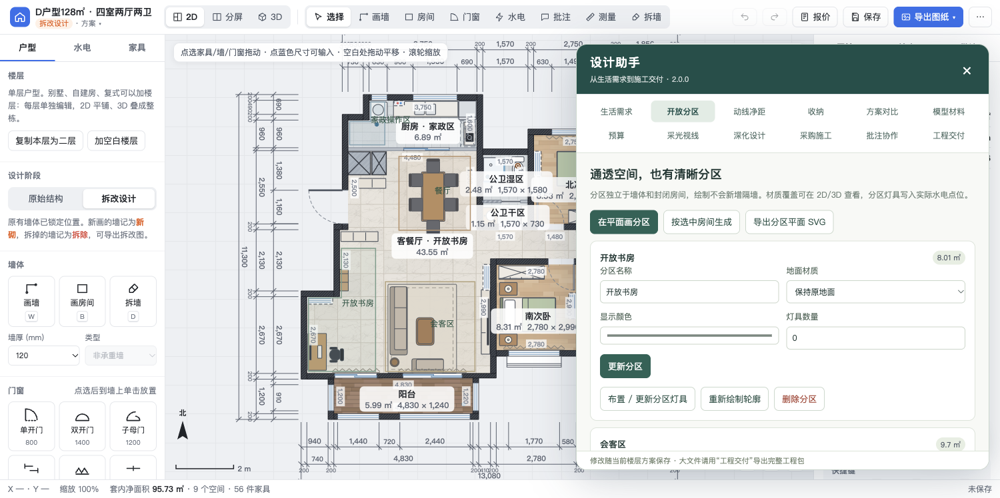

通透，也能分清用途
书房与客厅保持打通，独立绘制工作、会客、家政分区。命名、地面材质、照明分别安排。
生活需求开放分区动线净距
开源增强版 / 离线可用 / MIT
从一张户型图，到能修改、能漫游、能讨论的装修方案。家具怎么摆，收纳够不够，两个方案怎么选，放在同一个设计器里看。
在线 Demo 已预置一套四室两厅两卫方案，可直接编辑。
制作你家的户型，使用下方 Skill 流程。

支持图片、PDF、DXF 还原流程，生成一个可在浏览器离线打开的 HTML。
用起来，而不只是看效果
原设计器负责户型、家具、水电和图纸；新增设计助手，把日常生活和方案取舍接进来。
书房与客厅保持打通，独立绘制工作、会客、家政分区。命名、地面材质、照明分别安排。
柜体分配到成员，估算鞋位和挂衣量；家具操作区、门扇和通行目标一起复核。
保存整栋快照和三维画面，对比面积、收纳、点位和预算。修改可恢复，合并冲突由你选择。
导入静态 GLB/glTF 及配套贴图，按实物尺寸放置。保存材料组合，查看三维铺装与灯光情景。
数量来自当前方案，单价由你填写。主材、人工、损耗、运费分别计算，保留待询价项目。
导出图纸、点位清单和柜体节点；安排采购施工，记录实测与照片，通过离线批注包交换意见。

这是能操作的页面
这套示例保留了书房与客厅、厨房与家政区的打通要求。右下角进入「设计助手」，就能查看预置功能区、计算提醒和工程交付。
家庭需求、纬度、墙厚和结构性质有明确确认状态；没有询价的材料保留为待询价。
打开示例，试试移动一件家具 →两种开始方式
编辑记录保存在本机浏览器。重要方案请导出工程包备份。
架构公开，数据可带走
Agent 与 Python 工具把图纸变成结构化 HouseSpec；构建器将方案、主引擎和扩展嵌入单文件。
图片 / PDF / DXF
Agent 核对尺寸与结构
墙、门窗、家具、点位
毫米坐标与确认依据
2D Canvas + Three.js
独立设计助手扩展
JSON / IndexedDB
HTML / PDF / DXF / SVG
主模板保留上游已打包引擎；新增扩展源码单独维护，已知模板哈希与接口检查保护构建。浏览器端没有通用户型识别 AI 接口；还原流程由 Agent 和本地工具完成。
阅读扩展源码 ↗真实验收记录
本轮在 macOS Chrome 完成主功能、新增交互、程序回归和离线导入检查。示例输出的 32 页 PDF 已逐页查看，光追按默认时限自动出图，实际 168 次采样。
查看验收摘要 ↗留在自己的电脑里
使用范围：适合装修前的还原、布置讨论与方案比较。采光、净距、容量与预算按页面假设辅助估算；结构拆改、设备安装和施工尺寸需结合专业图纸及现场复核。模型支持普通静态 GLB/glTF，协作为离线文件交换。